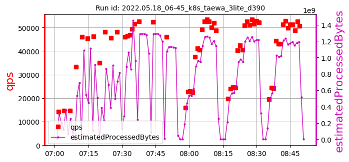

k8s_taewa_3lite_ samples: 12
date: 2022-06-13 11:35:50.956530
| | |
max:
511
min:
308
mean:
385
|
max:
55341
min:
42553
mean:
49757
|
max:
99.71
min:
86.90
mean:
96.64
|
max:
407
min:
46
mean:
237
|
| 1: 2022.03.26_08-14_k8s_taewa_3lite_9d2d | cpu=70 pods=6 treads=60 sc_min=14 warmup=90 | |
Dura-tion s | qps | CPU % | Err |
| | | [403, 424, 445]
424 | [49011, 44060, 44789]
45953 | [93.23, 94.03, 95.97]
94.41 | 285 |
| 2: 2022.03.27_09-43_k8s_taewa_3lite_0c47 | cpu=70 pods=6 treads=70 sc_min=14 warmup=90 | |
Dura-tion s | qps | CPU % | Err |
| | | [381, 369, 308]
353 | [53164, 52620, 54277]
53354 | [99.42, 99.41, 99.64]
99.49 | 46 |
| 3: 2022.03.31_23-04_k8s_taewa_3lite_41cf | cpu=70 pods=6 treads=70 sc_min=14 warmup=90 | |
Dura-tion s | qps | CPU % | Err |
| | | [355, 323, 373]
350 | [53359, 53331, 54504]
53731 | [99.56, 98.85, 99.71]
99.37 | 140 |
| 4: 2022.04.01_08-53_k8s_taewa_3lite_41cf | cpu=70 pods=6 treads=70 sc_min=14 warmup=90 | |
Dura-tion s | qps | CPU % | Err |
| | | [326, 356, 318]
334 | [52418, 52286, 53747]
52817 | [99.55, 99.2, 99.37]
99.37 | 407 |
| 5: 2022.04.01_21-08_k8s_taewa_3lite_41cf | cpu=70 pods=6 treads=70 sc_min=14 warmup=90 | |
Dura-tion s | qps | CPU % | Err |
| | | [353, 354, 445]
384 | [53864, 51686, 55341]
53630 | [99.61, 98.49, 99.45]
99.18 | 174 |
| 6: 2022.04.02_06-11_k8s_taewa_3lite_41cf | cpu=70 pods=6 treads=70 sc_min=14 warmup=90 | |
Dura-tion s | qps | CPU % | Err |
| | | [407, 382, 412]
400 | [45886, 45816, 43718]
45140 | [97.93, 96.14, 95.46]
96.51 | 122 |
| 7: 2022.04.03_09-53_k8s_taewa_3lite_41cf | cpu=70 pods=6 treads=70 sc_min=14 warmup=90 | |
Dura-tion s | qps | CPU % | Err |
| | | [466, 457, 359]
427 | [54087, 54709, 51521]
53439 | [99.36, 98.43, 96.38]
98.06 | 213 |
| 8: 2022.04.04_03-52_k8s_taewa_3lite_41cf | cpu=70 pods=6 treads=70 sc_min=14 warmup=90 | |
Dura-tion s | qps | CPU % | Err |
| | | [431, 367, 511]
436 | [46654, 52155, 51774]
50194 | [99.31, 97.46, 92.16]
96.31 | 256 |
| 9: 2022.04.05_08-07_k8s_taewa_3lite_41cf | cpu=70 pods=6 treads=70 sc_min=14 warmup=90 | |
Dura-tion s | qps | CPU % | Err |
| | | [358, 322, 348]
343 | [49038, 52446, 49834]
50439 | [99.2, 99.15, 99.56]
99.30 | 405 |
| 10: 2022.04.05_19-47_k8s_taewa_3lite_41cf | cpu=70 pods=6 treads=70 sc_min=14 warmup=90 | |
Dura-tion s | qps | CPU % | Err |
| | | [347, 439, 399]
395 | [44706, 45680, 43354]
44580 | [86.9, 93.53, 87.5]
89.31 | 147 |
| 11: 2022.05.18_06-45_k8s_taewa_3lite_d390 | cpu=70 pods=6 treads=70 sc_min=14 warmup=90 | |
Dura-tion s | qps | CPU % | Err |
|  | | | [421, 453, 350]
408 | [52503, 52433, 46033]
50323 | [96.87, 97.22, 95.88]
96.65 | 259 |
| 12: 2022.05.18_10-29_k8s_taewa_3lite_d390 | cpu=70 pods=6 treads=70 sc_min=14 warmup=90 | |
Dura-tion s | qps | CPU % | Err |
 | | | [415, 376, 321]
371 | [44086, 42553, 43793]
43477 | [88.48, 95.07, 91.42]
91.66 | 392 |
k8s_taewa_3lite_ samples: 12
date: 2022-06-13 11:35:50.956530
| | |
max:
511
min:
308
mean:
385
|
max:
55341
min:
42553
mean:
49757
|
max:
99.71
min:
86.90
mean:
96.64
|
max:
407
min:
46
mean:
237
|